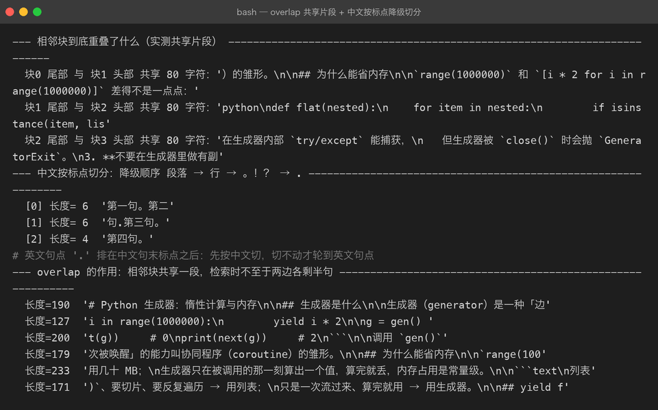
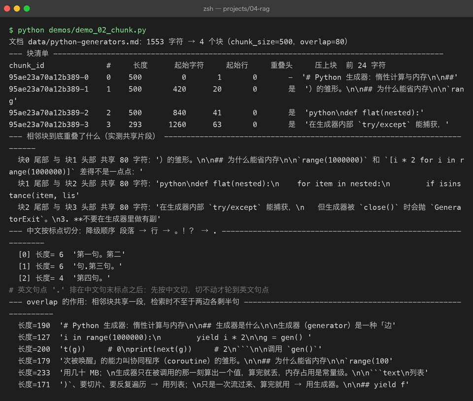

Project 04 — Chapter 02：Chunking【文档切分】
状态：✅ 已成文（文档先行，作为 src/ 落地设计依据） 对应代码：
src/rag/chunker.py（Chunk+chunk_text()+recursive_split()）
1. 本章要解决什么问题
Chapter 01 的产物是一篇篇完整的 Document。看起来"整篇文档直接入库"最省事——为什么不呢？
三个原因，每个都足够致命：
- 上下文窗口有限。检索到 10 篇文档、每篇 2 万字，塞给模型的 prompt 直接爆炸。你只能选一小部分塞进去，那"选的部分"其实就是隐式切分——不如自己显式地控制。
- 检索粒度 = 答案粒度。用户问"RAG 的 overlap 参数是干嘛的"，理想命中的是那一小段讲 overlap 的文字，而不是整篇 50 页的教程。你存什么粒度，就只能检索到什么粒度。
- Embedding 的语义稀释（下一章细讲）。一篇长文档被压成一个向量，这个向量是"全文大意"的平均味道——而用户的 query 是具体的小问题，大意对不上小问题。
你以为： 文档越完整，模型知道得越多，回答越好
实际上： 检索的单位是"块"，块的粒度决定答案的精度；
整篇存整篇检索 = 用大炮的瞄准镜找一只蚊子本章目标：
把整篇 Document 切成大小合适、边界不切断答案的 Chunk，并保留溯源信息。
2. 为什么需要这个知识
Chunking 是 RAG 里"最不起眼但收益最高"的一环：换 embedding 模型、换向量库都是边际提升，切分策略错了，后面的所有优化都是在错误的地基上装修。
两个核心参数必须真正理解，而不是背默认值：
| 参数 | 含义 | 太大的后果 | 太小的后果 |
|---|---|---|---|
chunk_size | 每块的目标长度 | 块向量是大意，检索不准；塞 prompt 也费 token | 一句话被拆散，检索到的块没有上下文，模型看不懂 |
overlap | 相邻块重叠的长度 | 浪费存储和 token | 答案正好跨在两个块的边界上被切断，两边都检索不到完整答案 |
overlap 的存在动机值得单独说：答案经常恰好落在切分边界上。比如"overlap 的作用是防止答案被切断"这句话，按 500 字切正好断在中间——两个块各拿到半句，都不完整。相邻块重叠 80 字，边界内容就会完整地出现在至少一个块里。
Java 里这个概念你天天见：分页。 chunk_size 就是 pageSize，overlap 就是"下一页往前回退几条"。切大文件的道理也一样：Java 里按固定字节数分批读大文件时，也要考虑边界记录被截断的问题——Python 里 chunk_text() 干的是同一件事，只是边界单位从"字节"换成了"语义"。
3. 核心概念
3.1 Chunk dataclass：切分产物必须可溯源
切完之后，"这段话出自哪篇文档的哪个位置"必须跟着块走：
# src/rag/chunker.py
from dataclasses import dataclass, field
@dataclass
class Chunk:
chunk_id: str # f"{doc_id}-{index}"
doc_id: str # 指回 Document，溯源链的关键
text: str
index: int # 在原文档中的序号，用于恢复顺序
metadata: dict = field(default_factory=dict)
# metadata 里合并 Document.metadata（source/格式/页码）+ 自己的 start_char注意 chunk_id = f"{doc_id}-{index}"：内容哈希做前缀意味着文档变了块 ID 全变，重建索引是安全的覆盖式操作——这和 Chapter 01 的幂等设计一脉相承。
3.2 三种切分策略
| 策略 | 做法 | 优点 | 缺点 | 何时用 |
|---|---|---|---|---|
| 固定长度 | 每 N 个字符切一刀 | 简单、可预期 | 经常把句子/概念拦腰斩断 | 基线、日志类无结构文本 |
| 递归分隔符（推荐） | 按 \n\n → \n → 句号 → 强制切的顺序降级 | 尽量贴着自然段落边界切，实现也就 30 行 | 段落极长时退化成固定长度 | 默认选择 |
| 语义切分 | 句子两两算 embedding 相似度，相似度骤降处切 | 边界最贴合语义 | 要先跑一遍 embedding，成本高 | 进阶，本章只提一句 |
递归分隔符的直觉：优先在段落之间切（\n\n），段落太长就在句子之间切，句子太长才硬切。 语义边界的优先级从高到低降级，所以叫"递归"。

3.3 长度单位：token 估算
chunk_size=500 的"500"是什么单位？字符还是 token【词元】？
生产上应该用 tokenizer 精确数；本章沿用 P03 的估算思路——英文约 4 字符/token，中文约 1.5~2 字符/token，混合文本用 len(text) / 1.6 估算：
def estimate_tokens(text: str) -> int:
"""粗略估算 token 数，只用于 sizing，不用于计费判断。"""
return max(1, int(len(text) / 1.6))为什么可以估：切分的 size 是一个工程参数不是法律条款，±20% 的误差不影响检索质量。Java 里你也会用 text.length() / 2 粗估中英混排的宽度来排版，同一个量级的妥协。

4. 动手实现（设计稿）
以下代码将在 src/rag/chunker.py 落地时实现，现在当设计稿读。
def split_with_overlap(text: str, size: int, overlap: int) -> list[str]:
"""固定长度切分：步长 = size - overlap。"""
if overlap >= size:
raise ValueError(f"overlap({overlap}) 必须小于 size({size})，否则 死循环/原地踏步")
pieces: list[str] = []
step = size - overlap
for start in range(0, len(text), step):
piece = text[start:start + size]
if piece.strip():
pieces.append(piece)
if start + size >= len(text):
break
return pieces
def recursive_split(text: str, size: int, overlap: int,
separators: list[str] | None = None) -> list[str]:
"""递归分隔符切分：优先大边界，降级到强制切。"""
seps = separators if separators is not None else ["\n\n", "\n", "。", "！", "？", "."]
if len(text) <= size:
return [text] if text.strip() else []
# 找到第一个"切得动"的分隔符
for sep in seps:
if sep in text:
parts = text.split(sep)
break
else:
# 所有分隔符都切不动：按字符强制切（带 overlap）
return split_with_overlap(text, size, overlap)
# 贪心合并：小段攒成不超过 size 的块
chunks: list[str] = []
buffer = ""
for part in parts:
candidate = (buffer + sep + part) if buffer else part
if len(candidate) <= size:
buffer = candidate
else:
if buffer:
chunks.append(buffer)
if len(part) <= size:
buffer = part
else:
# 单段超长：用下一级分隔符继续递归切它
chunks.extend(recursive_split(part, size, overlap, seps[1:]))
buffer = ""
if buffer:
chunks.append(buffer)
# 给相邻块补 overlap：取前一块尾部 overlap 个字符接到下一块开头
if overlap > 0:
glued: list[str] = []
for i, c in enumerate(chunks):
if i > 0 and chunks[i - 1]:
head = chunks[i - 1][-overlap:]
glued.append(head + c)
else:
glued.append(c)
chunks = glued
return chunks
def chunk_text(text: str, size: int = 500, overlap: int = 80) -> list[str]:
"""对外主入口。size/overlap 的单位是字符（粗对齐 token）。"""
if size <= 0 or overlap < 0:
raise ValueError("size 必须为正，overlap 不能为负")
return recursive_split(text, size, overlap)
def chunk_document(doc: "Document", size: int = 500, overlap: int = 80) -> list[Chunk]:
"""Document → list[Chunk]，逐块带上溯源信息。"""
from .document import Document # 落地时移到模块顶部
pieces = chunk_text(doc.text, size, overlap)
chunks: list[Chunk] = []
cursor = 0
for i, piece in enumerate(pieces):
start = doc.text.find(piece, cursor) # 记录在原文中的位置
cursor = start + len(piece)
chunks.append(Chunk(
chunk_id=f"{doc.doc_id}-{i}",
doc_id=doc.doc_id,
text=piece,
index=i,
metadata={**doc.metadata, "start_char": start},
))
return chunks关键实现思路：
overlap >= size直接抛异常：步长size - overlap会变成 0，切分死循环。这个参数约束要在入口处把守，Java 里@Min校验干的就是这事。chunk_document里find(piece, cursor)用游标：既拿到真实的start_char，又避免内容重复的块被 find 到错误位置。- Markdown 文档走专用预处理：Chapter 01 留下的代码围栏哨兵在这里生效——围栏内的文本按
\n切而不是按句号切，绝不把代码按。拦腰斩断；headings元数据用于在块 metadata 上标注"本块属于哪个章节标题下"，检索命中后能展示出处章节。 size=500, overlap=80是本章默认值，不是普适最优：落地后用真实文档调参，经验范围 size 在 300~800、overlap 在 size 的 10%~20%。
5. 踩坑清单
坑 1：chunk 太大，检索"好像都相关但都不准"
- 现象：top-5 检索结果每块都沾边，但答案质量差；塞进 prompt 又贵又稀释。
- 原因：块越大，块向量越代表"全文大意"，而 query 是具体小问题，大意匹配不出小问题的相关性。
- 正确做法：从 size=500 起步，检索不准时优先调小块（如 300），观察命中片段是否变准，而不是先换 embedding 模型。
坑 2：chunk 太小，检索命中了"正确但没有上下文"的碎片
- 现象：命中一个孤句"它需要先经过向量化"，模型不知道"它"是谁，回答瞎猜。
- 原因：块小于完整语义单元，指代、主语全在上一块里。
- 正确做法：适当加大 size；更稳的做法是检索命中后带上相邻块（
index-1和index+1一起给模型），或给每块补上所属章节标题作为上下文前缀。
坑 3：中文文本用英文习惯切分，块里全是碎句
- 现象：按
.或空格切中文，一个块里七八个半截句子，句号（中文是。）压根没当边界。 - 原因：英文以空格分词、句号结束；中文没有空格，句末是全角
。！？。Java 里处理 i18n 文本不也要注意BreakIterator的 locale 吗——同一类教训。 - 正确做法：分隔符序列里中文句末标点必须排在英文
.前面，如上面的["\n\n", "\n", "。", "！", "？", "."]。绝不要按空格切中文。
坑 4：overlap 导致同一段话被检索重复命中
- 现象：top-5 里有三个块内容几乎一样（都是 overlap 区的重复），浪费了 prompt 空间，还让"5 个来源"变成"1 个来源说三遍"。
- 原因：overlap 让相邻块共享一段文本，检索时这段文本在多个块里都算命中。
- 正确做法：检索后做去重——相邻块（index 连续）且重叠部分占比高的，合并或只保留信息量最大的一块；prompt 组装阶段按
doc_id + index排序后再去重。
坑 5：overlap >= size 没做校验，切分器悄悄死循环
- 现象：
chunk_text("...", size=100, overlap=120)程序卡死，CPU 飙满。 - 原因：步长
size - overlap≤ 0，窗口永远不前进。 - 正确做法：入口处参数校验直接 raise（见设计稿），不要相信调用方。
6. 自检清单
- [ ] 能不看笔记说出"为什么必须切"的三个原因（上下文窗口 / 检索粒度 / 语义稀释）
- [ ] 能解释 overlap 的存在动机：答案被边界切断
- [ ] 能写出递归分隔符的降级顺序，并说出为什么中文分隔符要排前面
- [ ]
Chunk里doc_id和index各自用于什么（溯源 / 恢复顺序与取相邻块） - [ ] size/overlap 单位是字符，能说出
len/1.6估算 token 的适用范围 - [ ] 知道检索侧重复命中的去重时机（检索后、prompt 组装前）
上一章：01-document-ingestion.md —— 把乱七八糟的文档变成干净文本
下一章：03-embedding.md —— 文本切好了，怎么让机器"理解"它说的是什么？